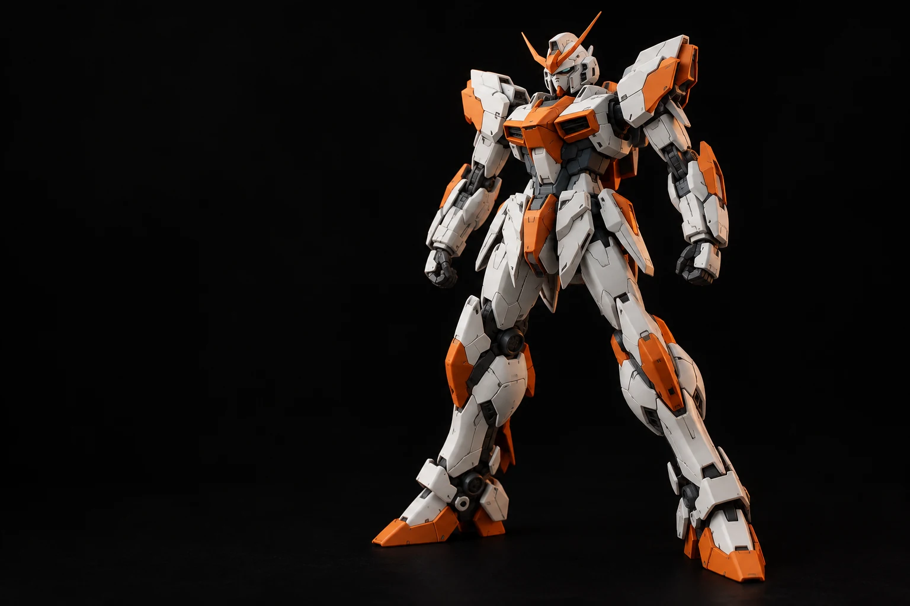

INDEPENDENT GUNPLA WORKSHOP
GDT / 001Every part.
A new
character.
Kit Anda, dengan karakter yang berbeda. Jasa rakit dan custom Gundam yang berawal dari detail, selesai dengan cerita.

01 — DI BALIK RAKITAN
Lebih dari sekadar kit.
Ini tentang karakter.
GDT WORKS adalah workshop independen jasa dan produk kit Gundam yang dikelola langsung oleh pemilik. Dari rakitan pertama hingga kit yang membutuhkan sentuhan baru.
Kami merakit, memberi detail, memodifikasi warna, dan memperbaiki kit sesuai kebutuhan Anda. Setiap pengerjaan dimulai dengan memahami kit dan keinginan pemiliknya.
02 — PORTOFOLIO
Small details.
Big difference.
Temukan kemungkinan baru
untuk kit kesayangan Anda.
Eksplorasi konsep layanan. Foto hasil proyek belum tersedia dalam laporan; visual di galeri adalah ilustrasi AI, bukan hasil pekerjaan pelanggan.
Belum ada proyek pada kategori ini.
03 — THE CRAFT
Your vision.
Our hands.
Lima cara memberi karakter
pada koleksi Anda.
Harga dan waktu pengerjaan mengikuti kondisi kit serta kompleksitas pesanan. Semuanya dibicarakan sebelum dimulai.
01Rakit kit
Perakitan kit Gundam sesuai jenis dan tingkat kesulitan pesanan. Setiap komponen disatukan mengikuti kebutuhan rakitan yang Anda inginkan.
ASSEMBLYDiskusikan rakitan02Detailing
Detail tambahan untuk memperkuat tampilan dan karakter kit. Area dan teknik pengerjaan ditentukan sesuai konsep yang disepakati.
DETAIL WORKDiskusikan detail03Filet Gundam
Pemotongan part dari runner, pembersihan nubmark atau sisa plastik, lalu pengelompokan komponen menurut bagian tangan, kaki, badan, dan lainnya.
PART PREPARATIONDiskusikan persiapan kit04Repaint
Pengecatan ulang atau perubahan warna kit Gundam. Tentukan arah warna dan bagian yang dikerjakan sesuai karakter yang ingin dibangun.
CUSTOM COLORDiskusikan warna05Repair
Perbaikan bagian kit yang rusak, lepas, cacat, atau memerlukan penyesuaian. Kondisi komponen diperiksa dahulu untuk menilai kemungkinan perbaikannya.
RESTORE & REFINEDiskusikan kondisi kit04 — WORK IN PROGRESS
Dari meja
pengerjaan.
Dokumentasi tahap demi tahap,
setelah disetujui untuk dibagikan.
Catatan berikutnya sedang disiapkan.
Belum ada progres proyek yang disetujui untuk publikasi. Tahapan di bagian berikut menjelaskan alur layanan, bukan status pesanan pelanggan.
Lihat alur pengerjaan05 — HOW IT COMES TOGETHER
Satu langkah.
Lebih dekat.
Dari ide pertama
sampai masuk koleksi.
Mulai dari percakapan.
Ceritakan jenis kit, kondisinya, serta hasil yang Anda inginkan. Detail layanan, estimasi biaya, dan waktu pengerjaan didiskusikan sebelum pesanan disepakati.
06 — THE WORKSHOP
Tempat ide
dirakit.
Informasi kunjungan,
pengiriman, dan pengambilan kit.
Titik workshop belum dipublikasikan.
Peta akan tersedia setelah lokasi resmi dikonfirmasi.
Alamat resmi belum dipublikasikan.
Jam kunjungan belum dikonfirmasi.
Metode pengiriman atau pengambilan kit dibicarakan bersama admin saat konsultasi.
07 — YOUR NEXT BUILD STARTS HERE
Ceritakan kit dan hasil yang Anda bayangkan. Kita mulai dari sana.
LET’S MAKE IT PERSONAL.